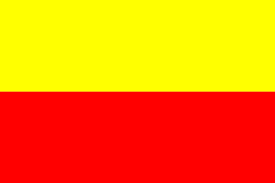

HISTORY
Today is Karnataka Rajyotsava, a day celebrating the formation of the state in 1956. ‘One State, Many Worlds’ best describes our story, marked by a unification despite the pulls and pressures of socio-linguistic fragmentation There is not a day on which Kannada, the state language of Karnataka, comes into popular focus more than every November 1. The day marked as Karnataka Rajyotsava, a public holiday, has been typically accompanied by visual symbols everywhere, of the state’s identity - like buntings of an (unofficial) flag and banners about an (official) language. Translated literally to 'State Festival', Rajyotsava marks the day in 1956 when the erstwhile Mysore State was expanded to re-unify into it, some key Kannada-speaking and geographically connected regions of South India. The change of the State’s official name to Karnataka itself happened close to two decades later, with the passing of the Mysore State (Alteration of Name) Act, 1973.
Celebrations of Karnataka Rajyotsava
Rajyotsava day is celebrated with great joy and vigour all over the state of Karnataka. The entire state wears a festive look on this day as the red and yellow Kannada flags are hoisted at different strategic locations across the state and the Kannada anthem ("Jaya Bharatha Jananiya Tanujate") is chanted.[9] The flag is hoisted at political party offices and several localities even as youth in many areas take out processions on two-wheelers.[10] Religion not being a factor, the Rajyotsava is celebrated by Hindus, Muslims[11] and Christians as well.
